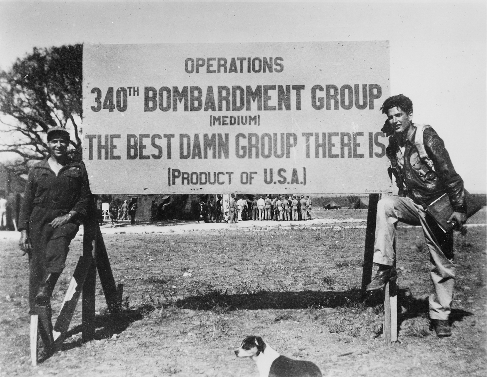

It shouldn’t have survived the first printing. It was a first novel by a part-time writer who had published very little since the 1940s. It was a book that captured the feelings of helplessness and horror generated by the darker side of the American dream at a time when the general reading public still expected fiction to reflect a positive view of contemporary America and its hallowed institutions. The title was changed twice during presswork; as if that weren’t enough, someone who thought he was portrayed in the book threatened to sue, prompting a name change for one of the main characters after almost a year in print.
But for a number of editors, advertisers, writers, and critics, reading the book echoed the opening line of the novel: “It was love at first sight.” This core of avid supporters kept the novel alive in the East Coast book market until word-of-mouth praise (and overnight bestseller status in Great Britain) took it to international prominence. In time, the title Catch-22 became a part of the English language, and Joseph Heller’s novel became an enduring part of American culture.
Heller was not unknown in publishing circles prior to Catch-22. His first published work appeared in the fall 1945 issue of Story, an issue dedicated to short fiction by returning servicemen. For several years after the war, he wrote what he called “New Yorker–type” stories about Jewish life in Depression-era Brooklyn. Several of these formula pieces were published in Esquire and the Atlantic Monthly while Heller was completing undergraduate work in English at NYU. These publications gained him some attention as a promising new writer, but he published no new stories after 1948—partly because they weren’t selling anymore, but primarily because he was ready to move on to more universal material:
By the time I was a senior in college, I’d done a little more reading and I began to suspect that literature was more serious, more interesting than analyzing an endless string of Jewish families in the Depression. I could see that type of writing was going out of style. I wanted to write something that was very good and I had nothing good to write. So I wrote nothing.1
Instead, he began graduate studies in English at Columbia, which he would complete with an M.A. in 1949, followed by an additional year at Oxford on a Fulbright Scholarship. After two years teaching expository writing at Pennsylvania State University, Heller moved back to New York in 1952 and took a job writing for a small advertising agency, and later for Remington Rand. Graduate work provided the insight required to attempt serious literature, and Heller wanted to write a novel. The drive developed tentatively and without much outside inspiration. He was generally disappointed by the new novels of the early postwar years: “There was a terrible sameness about books being published and I almost stopped reading as well as writing.” He considered the war novels of Jones, Miller, Shaw, and others quite good, but he did not at first consider his own wartime experiences as subject for fiction. Nearly thirty typescripts accumulated by 1952, but only one—the never-published “Crippled Phoenix”—offered a hint of the wartime traumas that would surface in Catch-22.
In 1953, he began a series of notecards outlining characters and a military scenario for what would become Catch-22. Certainly his wartime experiences, and those of boyhood friends like George Mandel, formed a basis for the new project. Mandel, who had been seriously wounded as an infantryman in Europe, would eventually write The Wax Boom (1962), a tough war novel that also questioned traditional army chain-of-command responses to combat situations. Mandel remained a responsive and insightful reader for Heller during the seven years that Catch-22 evolved.

A photograph from Joseph Heller’s copy of the 488th Squadron’s unofficial scrapbook. Heller is on the right.
But in 1953, Heller was still searching for the right form and style of expression. In literature, he found himself attracted to the innovative work of Waugh, Nabokov, and Céline for their successes in achieving the kind of effect Heller wanted. In an early post-publication interview, Heller used Nabokov’s work to describe the effect he himself was searching for: “Nabokov in Laughter in the Dark takes an extremely flippant approach to situations deeply tragic and pathetic, and I began to try for a similar blending of the comic and the tragic so that everything that takes place seems to be grotesque yet plausible.”2
From a publishing perspective, however, it was Heller’s interest in Céline that finally sparked a marketable product. Heller had read Céline’s Journey to the End of the Night while teaching at Penn State; sometime later, probably in 1954, he read Céline’s Death on the Installment Plan. Céline’s experimentation with time, structure, and colloquial speech profoundly affected him, and triggered a crucial burst of creative energy. Heller recalled the event for his 1975 Playboy interview with Sam Merrill:
I was lying in bed, thinking about Céline, when suddenly the opening lines of Catch-22 came to me: “It was love at first sight. The first time he saw the chaplain, Blank fell madly in love with him.” I didn’t come up with the name Yossarian until later, and the chaplain wasn’t necessarily an Army chaplain. He could have been a prison chaplain. Ideas of plot, pace, character, style, and tone all tumbled out that night, pretty much the way they finally appeared in the book. The next morning, at work, I wrote out the whole first chapter and sent it to my agent, Candida Donadio, who sold it to New World Writing.
Donadio offered “Catch-18” to Arabel Porter at New American Library’s Mentor Books, and immediately found another enthusiastic fan; Porter wanted “Catch-18” for the Seventh Mentor Selection of New World Writing, an NAL series dedicated to publishing the best new literature and criticism. Other NAL editors concurred in superlative terms; Walter Freeman believed that “Of all the recommended pieces lately, this stands out. It seems like part of a really exciting, amusing novel.” Founding editor Victor Weybright was convinced that “Catch-18” was the “funniest thing we have ever had for NWW.”3
Although Heller was already referring to his initial experiment as a prospective novel, it would be a year before he completed the next chapter, and two years before he finished enough material to send out the story for further review. The main problem was time: between business and family responsibilities, Heller was only able to work on Catch-18 in the evenings, and never very late. He worked slowly and revised extensively at the kitchen table in his West End Avenue apartment, completing about three handwritten pages each night on yellow legal tablets. By day he continued in advertising, moving to successively better-paying positions at Time in 1955 and Look in 1956. In 1957 he moved into the Advertising-Promotion Department at McCall’s, where he would remain until Catch-22 changed his life forever.
By the summer of 1957, Heller had completed enough to make a seventy-five-page typescript. In August, Candida Donadio circulated the typescript and received offers from Bob Gottlieb at Simon and Schuster and Tom Ginsberg at Viking. Each offered options to draw a contract when the book was complete; author and agent passed on both, opting to develop more of the book and then ask for an immediate contract.
In February 1958, Donadio sent a longer typescript to Bob Gottlieb, who had shown a very strong interest the previous summer. By this time, Heller had finished seven handwritten chapters and revised them into a 259-page typescript. This typescript eventually became the first third of the book, evolving into the first sixteen chapters of the final novel. Gottlieb, at twenty-six the youngest editor at Simon and Schuster, loved what he saw of the book and arranged a contract for Heller, but not without a struggle.
Four members of the editorial board reported on the manuscript: Gottlieb, administrative editor Peter Schwed, Justin Kaplan (then an executive assistant to Henry Simon and Max Schuster), and Henry Simon, younger brother of founder Richard Simon and by 1958 a vice president. In his report, Gottlieb wrote:
I still love this crazy book and very much want to do it. It is a very rare approach to the war—humor that slowly turns to horror. The funny parts are wildly funny, the serious parts are excellent. The whole certainly suffers somewhat by the two attitudes, but this can be partly overcome by revisions. The central character, Yossarian, must be strengthened somewhat—his single-minded drive to survive is both the comic and the serious center of the story.4
Gottlieb was the strongest advocate, and both Schwed and Kaplan found it wildly funny but at times repetitive. Even Gottlieb conceded that the book would not be a big seller, although he felt that it was “bound to find real admirers in certain literary sets.” Henry Simon, however, found Yossarian’s escapades repetitive and at times offensive, and recommended against publication. In the end, Heller’s willingness to make revisions, and Gottlieb’s willingness to work with him, convinced the board to contract the book.
The 1955 appearance of chapter 1 in New World Writing had introduced the publishing world to Catch-18, and by the end of the decade news about the novel had spread by word of mouth from Heller’s agent, his publisher, and his own circle of friends and advertising associates. His contract had originally called for 1960 publication, but Heller needed all of 1960 to finish the manuscript and work it into shape for publication. By this time the 259-page typescript of 1958 had more than doubled in length; Heller had extended the existing episodes by interleaving handwritten pages of the familiar legal-sized yellow paper into the typescript, thus expanding it from seven to sixteen chapters (through “Luciana,” chapter 16 of the final work) without altering the order and basic structure of the earlier draft. But a major new manuscript section picked up where the original circulating typescript left off, adding another twenty-eight chapters to the increasingly complex narrative. Chapter 39, “The Eternal City,” had proven most troublesome; it took months to refine the dark tones of Yossarian’s final trip to Rome and create a smooth transition into the revelations of the novel’s concluding chapters.
During 1960, Heller prepared a new 758-page typescript from this conflation, and made revisions that included deletion of the original manuscript chapter 18, “Rosoff.” This chapter provided a chronological bridge between the “Soldier in White” chapter, set in the hospital on Pianosa, and “The Soldier Who Saw Everything Twice” chapter, a flashback into Yossarian’s earlier hospital episodes at Lowry Air Base in Denver, Colorado. The deleted chapter included an overlong but delightful digression into “PT” and team sports at Lowry, but Heller soon sensed that this interlude impeded the progress of the narrative. Other digressive episodes would have to be cut as well before the book would go to press.
With the newly revised typescript in hand, Heller and Gottlieb made further revisions in the text. After a series of editorial sessions, Heller shortened the typescript by about 150 pages. The typescript, now heavily revised and partially retyped, became printer’s copy for the Simon and Schuster galley proofs. Before the text was actually set, Heller worked with Gottlieb on some final cuts, including the original chapter 23 (“The Old Folks at Home”), a digressive flashback to conversations between Nately and his capitalist father.
Heller’s working relationship with Gottlieb was the catalyst that finally reduced the complex narrative to a manageable scale; but the chemistry did not carry over to the copy editor assigned to Catch-18. For weeks, Heller found himself locked in a syntactic struggle of wills:
[Gottlieb] assigned the book to a copy editor who immediately began rearranging my sentences and paragraphs. . . . She apparently had an aversion to what I think might be called compound predicates. For example, if I wrote “He struck a match and lit a cigarette,” she would change it to “He struck a match and he lit a cigarette.” It was even worse when she got to sentences like “‘Get out,’ he said, foaming at the mouth.” This she would change to “‘Get out,’ he said, and he foamed at the mouth.”5
Re-editing the book back into Heller’s own conversational idiom took about six weeks in early 1961, and led to a delayed release date. Before the copyediting problem, Heller and Gottlieb had been on track for a late-summer release; after the delay, Heller was given his choice of mid-October 1961 or January 1962. He opted for October, putting the novel on the threshold of the holiday marketing season.
This delay led to even more unexpected trouble through a bizarre coincidence of titles. In January 1961, Leon Uris’s new novel, Mila 18, was announced for summer publication; given Uris’s best-selling reputation, a new title for Catch-18 was inevitable. For two weeks in January, Heller and Gottlieb tried a number of new titles. Catch-11 was promising—the vowel following the consonants in “Catch” had the right sound, but the title had an extra syllable; besides, it was too close to Frank Sinatra’s new movie title, Ocean’s Eleven (1960). Heller came up with Catch-14 next, and tried to convince Gottlieb that it was the right number in a letter dated January 29, 1961:
The name of the book is now CATCH-14. (Forty-eight hours after you resign yourself to the change, you’ll find yourself almost preferring this new number. It has the same bland and nondescript significance of the original. It is far enough away from Uris for the book to establish an identity of its own, I believe, yet close enough to the original title to still benefit from the word of mouth publicity we have been giving it.)
Gottlieb was not happy with 14—the central concept of the novel was “Catch-18,” and for everyone at Simon and Schuster, it had been “Catch-18” for more than three years. After a halfhearted attempt at accepting Catch-14, Gottlieb had a late-night flash of conviction and came up with the title which has long since passed into the language: “22, it’s 22! And I remember calling up Joe and saying, ‘It’s funnier than 18!’ But of course the fact is that no number is funnier than any other number, it’s complete self-delusion. But once we were convinced it was funnier, then it became funny.”6 Both Heller and Gottlieb soon realized just how well the new title represented the structure of events in the novel—the soldier who saw everything twice, Yossarian’s disastrous second target pass during the Bologna mission, and the chaplain’s déjà vu are key examples of the novel’s doubling structure. But all this came later—as Gottlieb observes, “We were just desperate publishers looking for a title.”
Catch-22 was published on October 10, 1961, but an aggressive marketing campaign was already reaching beyond reviewers to a wide circle of writers, literary critics, and even to competing publishers. The day after publication, advertising manager Nina Bourne and Bob Gottlieb published “What’s the Catch?” a full-page five-column ad in The New York Times recapping the intellectual fan mail that was streaming into Bourne’s office. A second, full-length two-column ad appeared in the November 3 Times, and after Christmas short, eye-catching bullets by Morris West, Kenneth Tynan, and Nelson Algren appeared every few days under the paper soldier logo designed for the dust jacket by Paul Bacon. Six months after release, a status report on the emerging “Catch Craze” appeared across an entire page and a facing column of the April 29, 1962, New York Times Book Review. But this ad was different—most of the columns documented a new wave of letters from grassroots American readers who discovered Catch-22 through the word-of-mouth endorsements that were beginning to create a long-term market for the novel.
In spite of praise from an ever-increasing number of critics, writers, and mainstream readers, Heller was about to face a Yossarian-like challenge that would soon force a major change in the text of his novel. He had relied on his own wartime experiences in a Mediterranean-based B-25 bomber squadron for plot elements, but his use of fictitious character names, unit designations, and base locations minimized the potential for lawsuit. In fact, none of the aviators who inspired the characters in Catch-22 ever voiced objection. But in the late spring of 1962 someone not portrayed in the novel threatened a lawsuit because he thought he was. He shared the name of Heller’s “Anabaptist” chaplain, Robert Oliver Shipman, referred to for the most part throughout the novel simply as R. O. Shipman.
The Shipman character had already developed a literary identity, and Heller did not want readers to be confused by different versions of the book. Heller had never known the real Shipman, but the coincidence of name and certain background similarities led to a name change to A. T. Tappman—another seven-letter name that avoided resetting the entire book. This significant change appears in the sixth and subsequent printings of the Simon and Schuster text, and in all printings of the Dell mass-market paperback edition released in the fall of 1962. Later printings of Jonathan Cape’s British first edition also picked up the change, but the Transworld mass-market British paperback has continued to use the original name for decades.
This controversy remained a private matter, and the Simon and Schuster staff soon turned to more public marketing milestones. The house advertising effort culminated a year after release with a full-page eight-column “Happy Birthday Catch-22” ad in the daily New York Times. As with the other ads, it had the unique style that Nina Bourne had learned from Richard Simon himself—the idea of bringing the reader inside the publishing house to learn the story of the novel. It was a personal approach, like writing a letter to a friend, or, as Bob Gottlieb observed, like “bringing the public—bringing the reader in on it. You were talking to people instead of inventing things, coming out with real feelings about a particular book.” The ads—an impossible undertaking at today’s costs—were more heartfelt than calculated, but in the end, the Catch caught on.
And as the word spread, public and academic interest in the novel continued to grow. The postmodern experimental structure was worthy of critical investigation, and the satire engaged students (and professors) who were skeptical of the postwar military establishment. But the chance for Catch-22 to become a contemporary classic, and for the “Catch” phrase to pass into our culture, grew from universal aspects of the plot. As Nelson Algren noted in his June 23, 1962, Chicago Daily News review, Heller’s burlesque of the military leader is also a burlesque of the business leader, or the leader of any bureaucratic machine. Syndicated columnists beyond the book world also came on board for Catch-22, including Richard Starnes, Murray Kempton, and Ralph Gleason. Starnes—a conservative political columnist writing for the conservative New York World Telegram—offered proof enough that the novel’s universal relevance could break through ideological biases. In fact, by overcoming the odds of the publishing business, Heller fulfilled Starnes’s early prognosis for literary immortality: “Yossarian will, I think, live a very long time.”
JONATHAN R. ELLER is professor of English and senior textual editor in the Institute for American Thought, Indiana University School of Liberal Arts (IUPUI). Portions of this essay appeared in his article “Catching a Market: The Publishing History of Catch-22,” Prospects 17 (1992), 475–525.
1 Sam Merrill, “Playboy Interview: Joseph Heller,” Playboy (June 1975): 59ff.
2 W. J. Weatherby, “The Joy Catcher,” Manchester Guardian, Nov. 20, 1962.
3 Kenneth C. Davis, Two-Bit Culture: The Paperbacking of America (Boston: Houghton-Mifflin, 1984), 200.
4 A copy of Gottlieb’s editorial report, dated Feb. 12, 1958, is in the Catch-22 Papers, Brandeis University.
5 Richard Greeman, “Joseph Heller Lionized by Critics for His Novel of War and Mankind,” Fire Island News, July 14, 1962.
6 Robert Gottlieb, interview with the author, New York, June 12, 1991. Heller’s slightly different version appears in Josh Greenfield, “22 Was Funnier Than 14,” New York Times Book Review, Mar. 3, 1968. Subsequent quotations by Gottlieb are from the same interview.